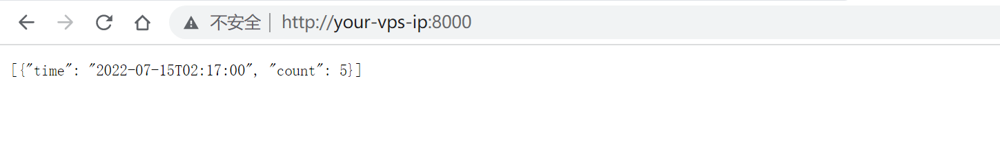
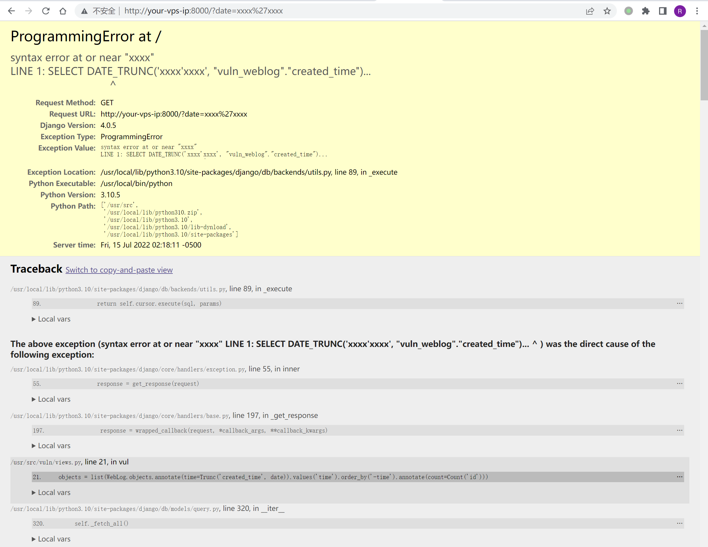

Django Trunc(kind) and Extract(lookup_name) SQL 注入漏洞 CVE-2022-34265¶
漏洞描述¶
Django 在 2022 年 7 月 4 日发布了安全更新，修复了在数据库函数 Trunc() 和 Extract() 中存在的 SQL 注入漏洞。
参考链接：
漏洞环境¶
启动一个 Django 4.0.5 版本的服务器：
docker-compose up -d
环境启动后，你可以在 http://your-ip:8000 看到一个页面。这个页面使用了 Trunc 函数来聚合页面点击数量，比如使用 http://your-ip:8000/?date=minute 即可看到按照分钟聚合的点击量：

漏洞复现¶
修改 date 参数即可复现 SQL 注入漏洞：
http://your-ip:8000/?date=xxxx'xxxx
